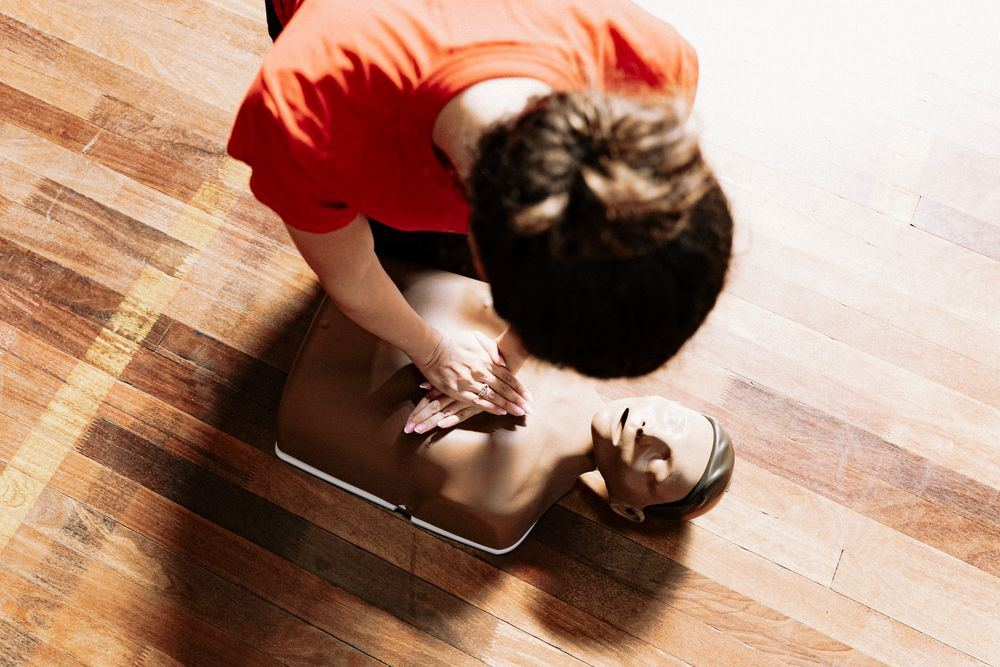

Jour 1
Reconnaître, alerter
Alerte et bilan, inconscience, obstruction des voies aériennes, hémorragies externes, malaise de la femme enceinte.
« L'urgence obstétricale ne prévient pas. Elle se prépare, geste après geste, bien avant la garde où elle surviendra. »
Maternité · Libéral · PMI
Une naissance qui se précipite dans un couloir, un post-partum qui saigne trop, un nouveau-né qui tarde à crier. Trois jours pour réactualiser les gestes d'urgence de toute sage-femme et les confronter à vos situations réelles.
Prix : ancien tarif 450 € 385 € TTC
Qu'est-ce que l'AFGSU 2 pour une sage-femme ? L'attestation qui certifie vos gestes d'urgence, à renouveler tous les 4 ans.
L'arrêté du 30 décembre 2014, modifié par l'arrêté du 1er juillet 2019, organise l'AFGSU 2 pour les professions de santé de la 4e partie du Code de la santé publique. La sage-femme l'obtient pendant ses études, puis doit la réactualiser tous les 4 ans pour qu'elle reste valable.
Le métier a une particularité : l'urgence y concerne presque toujours deux patients. La mère, dont l'état peut basculer en quelques minutes après la naissance, et l'enfant, dont les premières minutes de vie conditionnent la suite.
Et ces urgences ne surviennent pas toujours en salle de naissance. Une sage-femme libérale peut se trouver seule à domicile ; une collègue de PMI, en consultation, face à une femme enceinte qui fait un malaise.
L'AFGSU 2 n'est pas une formation de simulation obstétricale. Elle reprend le socle commun de l'urgence, puis l'éclaire par vos situations : c'est ce socle qui tient quand tout s'accélère.
Domicile, véhicule, couloir des urgences.
Quantifier, masser, alerter, sans attendre.
Sécher, réchauffer, ventiler, masser.
Protéger, décubitus latéral gauche, alerter.
Cas : arrêt cardiaque chez une femme enceinte de 32 semaines, déplacement utérin manuel pendant le massage.
Cas : accouchement à domicile avant l'arrivée du SMUR, puis saignement abondant après la délivrance.
Cas : plan blanc déclenché, la maternité doit libérer des lits et organiser les transferts.
Mannequins nourrisson et adulte, ventilation et massage : vous pratiquez sur les deux.

Prix : ancien tarif 450 € 385 € TTC
Les sessions ont lieu partout en France. Pour une maternité, un réseau de périnatalité ou un service de PMI, la formation se déroule aussi dans vos locaux.
Jour 1
Alerte et bilan, inconscience, obstruction des voies aériennes, hémorragies externes, malaise de la femme enceinte.
Jour 2
RCP adulte et grossesse, nourrisson et nouveau-né, défibrillateur, chariot d'urgence, éclampsie.
Jour 3
Accouchement inopiné, hémorragie du post-partum, hygiène et AES, risques collectifs, évaluation.
Habilités à enseigner l'AFGSU, issus de l'urgence.
6 à 12 participants.
Mannequins, simulateur, défibrillateur.
Valable 4 ans.
Oui, l'AFGSU 2 est intégrée à la formation en maïeutique : la sage-femme, profession médicale de la 4e partie du Code de la santé publique, l'obtient pendant ses études. L'attestation est valable 4 ans et doit ensuite être réactualisée. Les maternités et services de PMI attendent une attestation à jour ; en libéral, elle témoigne de la mise à jour de vos gestes.
Non, l'AFGSU 2 n'est pas une formation spécialisée en obstétrique. Elle couvre les gestes d'urgence de tout professionnel de santé, dont l'accouchement inopiné et la réanimation du nouveau-né, et les applique aux situations des sages-femmes. Pour l'hémorragie du post-partum ou l'éclampsie en salle de naissance, elle complète vos formations de simulation obstétricale sans s'y substituer.
Appelez le 15, qui adapte l'envoi des moyens, puis installez la parturiente dans un endroit chaud et propre. Accompagnez l'expulsion sans tirer, séchez immédiatement le nouveau-né, posez-le en peau à peau et couvrez-le. Clampez le cordon selon les consignes, surveillez la délivrance et quantifiez les pertes. Le scénario est travaillé sur simulateur pendant la formation.
Alertez immédiatement, notez l'heure et quantifiez les pertes avec un sac de recueil. Vérifiez la vacuité et la tonicité utérine et massez l'utérus. Posez une voie veineuse si possible, surveillez pouls, tension et conscience, et préparez le relais médical. Hors maternité, appelez le 15 sans attendre : chaque minute compte dans l'hémorragie du post-partum.
Séchez et stimulez l'enfant, gardez-le au chaud et libérez ses voies aériennes en plaçant la tête en position neutre. S'il ne respire pas efficacement, commencez une ventilation au masque, en vérifiant que le thorax se soulève. Si la fréquence cardiaque reste très basse malgré une ventilation efficace, associez des compressions thoraciques. La formation entraîne ces gestes sur mannequin.
Protégez la patiente des traumatismes, sans la contenir, et installez-la en décubitus latéral gauche. Alertez immédiatement l'équipe médicale ou le 15. Après la crise, assurez la liberté des voies aériennes, oxygénez si possible et surveillez la conscience, la tension et le bien-être fœtal. Le traitement par sulfate de magnésium relève du protocole et de la prescription médicale.
Oui, plusieurs mises en situation se déroulent hors établissement : consultation au cabinet, visite postnatale à domicile, préparation à la naissance. Vous travaillez l'alerte précise au 15, l'utilisation d'un défibrillateur public, la gestion de l'entourage et la surveillance d'un nouveau-né jusqu'à l'arrivée des secours, avec le matériel d'une sage-femme libérale.
Oui, sur un point essentiel : après 20 semaines environ, l'utérus comprime la veine cave quand la patiente est sur le dos. Pendant le massage, un équipier déplace manuellement l'utérus vers la gauche. Le massage, la ventilation et la défibrillation suivent sinon l'algorithme standard. Alertez en précisant la grossesse, car l'équipe médicale adapte sa prise en charge.
Pensez au syndrome de compression de la veine cave : pâleur, sueurs, nausées, sensation de malaise en position couchée sur le dos en fin de grossesse. Installez immédiatement la patiente sur le côté gauche ; les symptômes cèdent généralement en quelques minutes. S'ils persistent, recherchez une autre cause et alertez. La formation l'intègre aux scénarios de malaise.
La formation AFGSU 2 coûte 385 € TTC au lieu de 450 €. Elle dure 21 heures, soit 3 jours en présentiel. Le prix comprend l'enseignement, l'utilisation des mannequins adulte, enfant et nouveau-né, du défibrillateur de formation et du matériel d'urgence, ainsi que l'attestation délivrée par le CESU.
Le CESU, Centre d'Enseignement des Soins d'Urgence, délivre l'attestation AFGSU de niveau 2 à l'issue des 21 heures, sous condition de présence complète et de validation des gestes. L'attestation est valable 4 ans. Une réactualisation avant l'échéance permet de la prolonger sans repasser l'ensemble de la formation.
Inscrivez-vous à une formation AFGSU 2 complète de 21 heures : passé le délai de 4 ans, la réactualisation courte n'est en général plus possible. Indiquez dans le formulaire la date de votre dernière attestation et votre mode d'exercice. Nous vous orientons vers la prochaine session proche de chez vous ou de votre maternité.
L'AFGSU 1, en 14 heures, s'adresse à tous les personnels d'un établissement de santé, soignants ou non. L'AFGSU 2, en 21 heures, est destinée aux professionnels de santé, dont les sages-femmes : elle ajoute l'usage du matériel d'urgence, la réanimation en équipe et les urgences potentielles comme l'accouchement inopiné.
Oui, nous intervenons dans les maternités, centres périnataux et services de PMI pour des groupes de 6 à 12 professionnels. Les scénarios s'appuient alors sur vos salles, votre matériel et votre organisation d'alerte. Sages-femmes, auxiliaires de puériculture et infirmières peuvent être formées ensemble pour travailler la coordination. Demandez un devis.
Précisez votre mode d'exercice et la période qui vous convient. Nous revenons vers vous avec une date. Par téléphone : 07 80 91 23 35.